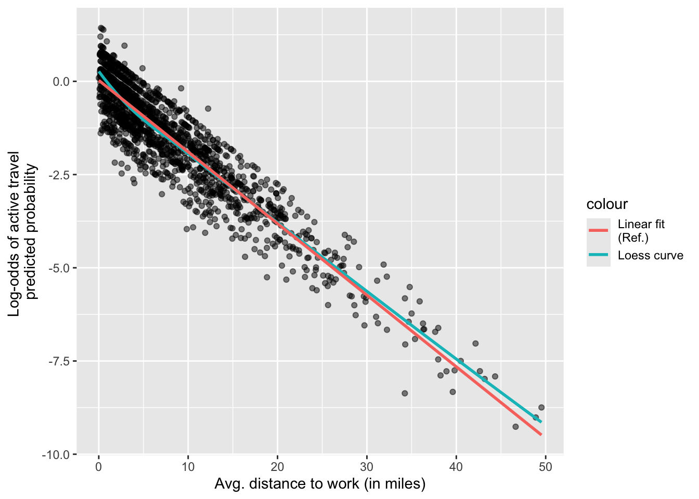

# Packages
library(tidyverse) # For data manipulation
library(gtsummary) # Descriptive statistics
library(performance) # Model checks5 Session 5: Logistic regression Part 2
In today’s session we will continue learning about logistic regression. Last time, we learned more about suitable outcome variables for this type of model, i.e. binary ones (which only have two mutually exclusive categories). Also, we fitted a logistic regression model and were introduced to coefficient interpretation. We made interpretations in the log of the odds. Today, we will learn about coefficient interpretations in the odds ratio scale. Also, we will learn more about model goodness-of-fit and checking model assumptions.
5.1 Preliminaries
For today’s session we will need the following packages. You needed them for the previous lab.
We will continue to work with the data subset that you created in the last session, which includes information about commuting to work trips at the individual level.
persons_main <- readRDS('data/persons_main.RDS')Let’s take a quick look to refresh our understanding of the data’s contents and structure.
glimpse(persons_main)Rows: 1,681
Columns: 7
$ active_binary <dbl> 0, 1, 0, 0, 0, 0, 0, 0, 0, 0, 1, 0, 0, 0, 0, 0, 0, 0,…
$ free_parking <chr> "No", "No", "No", "No", "No", "Yes", "No", "No", "No"…
$ avg_distance <dbl> 2.313454, 1.360803, 4.188145, 2.065438, 2.835317, 3.9…
$ gender <chr> "Girl/Woman (cisgender or transgender)", "Boy/Man (ci…
$ higher_education <chr> "Yes", "Yes", "Yes", "Yes", "Yes", "Yes", "Yes", "Yes…
$ children <chr> "Yes", "No", "No", "No", "No", "No", "Yes", "Yes", "N…
$ hhincome_broad <fct> "$100,000-$199,999", "$25,000-$49,999", "$200,000 or …5.2 Estimating a logistic regression model
We start by estimating the same logistic regression model that we discussed in Session 4. Here, we aim to identify the relationships between having free parking at work (key independent variable) and persons engaging in active travel to work (dependent variable), including control variables, such as average trip distance, gender, higher education, presence of children at household, and household income.
To estimate the logistic regression we use the glm() function and specify the family ‘binomial’. The glm() function uses the first category as the reference group (the group without the outcome) and treats the second category as the outcome group. In this case, ‘1’ = active travel, and ‘0’ = no active travel (the reference group). This is critical to make correct coefficient interpretations.
logit_model1 <- glm(
active_binary ~ free_parking + avg_distance + gender + higher_education + children + hhincome_broad,
family = "binomial",
data = persons_main
)5.3 Interpreting exponentied coefficients: Odds ratio
In the previous session, we fitted a logistic regression model and interpreted the coefficients on the log-odds scale. However, the log of the odds is not very intuitive or it is hard to communicate for wider audiences. We can exponentiate the coefficients to obtain the odds ratio. If the logit model is:
\[ \log\left(\frac{p}{1-p}\right) = \beta_0 + \beta_1 X \]
then, exponentiating both sides gives:
\[ \frac{p}{1-p} = e^{\beta_0 + \beta_1 X} = e^{\beta_0} \cdot e^{\beta_1 X} \]
The exponentiation reverses the logarithm, transforming coefficients from the log-odds scale back to the odds ratio scale. Specifically, \(e^{\beta_1}\) represents the odds ratio (OR):
\[ \text{OR} = e^{\beta_1} \]
Thus, for a one-unit increase in \(X\), the odds of the outcome are multiplied by \(e^{\beta_1}\). Specifically:
- If \(\beta_1 > 0\), then \(e^{\beta_1} > 1\), meaning the odds increase
- If \(\beta_1 < 0\), then \(e^{\beta_1} < 1\), meaning the odds decrease
- If \(\beta_1 = 0\), then \(e^{\beta_1} = 1\), meaning the odds remain unchanged
For example, if \(\beta_1 = 0.5\), then \(e^{0.5} \approx 1.65\), meaning the odds increase by 65% for each one-unit increase in \(X\).
5.3.1 Odds ratio in our example
Let’s exponentiate the results of our logistic regression model!
logit_model1 %>%
tbl_regression(exponentiate = TRUE) %>%
add_significance_stars(hide_ci = FALSE, hide_p = FALSE) %>%
add_glance_table()| Characteristic | OR1 | SE | 95% CI | p-value |
|---|---|---|---|---|
| free_parking | ||||
| No | — | — | — | |
| Yes | 0.47*** | 0.148 | 0.35, 0.63 | <0.001 |
| avg_distance | 0.79*** | 0.019 | 0.76, 0.82 | <0.001 |
| gender | ||||
| Boy/Man (cisgender or transgender) | — | — | — | |
| Girl/Woman (cisgender or transgender) | 0.60*** | 0.132 | 0.46, 0.77 | <0.001 |
| Non-binary/Something else fits better | 0.75 | 0.393 | 0.34, 1.60 | 0.5 |
| Prefer not to answer | 0.54 | 0.335 | 0.27, 1.02 | 0.064 |
| higher_education | ||||
| No | — | — | — | |
| Yes | 1.88*** | 0.175 | 1.34, 2.67 | <0.001 |
| children | ||||
| No | — | — | — | |
| Yes | 0.52*** | 0.175 | 0.36, 0.72 | <0.001 |
| hhincome_broad | ||||
| Under $25,000 | — | — | — | |
| $25,000-$49,999 | 0.53 | 0.349 | 0.27, 1.06 | 0.072 |
| $50,000-$74,999 | 0.48* | 0.353 | 0.24, 0.95 | 0.036 |
| $75,000-$99,999 | 0.49* | 0.354 | 0.24, 0.98 | 0.045 |
| $100,000-$199,999 | 0.43* | 0.332 | 0.22, 0.83 | 0.012 |
| $200,000 or more | 0.55 | 0.345 | 0.28, 1.09 | 0.087 |
| Null deviance | 1,939 | |||
| Null df | 1,680 | |||
| Log-likelihood | -761 | |||
| AIC | 1,548 | |||
| BIC | 1,619 | |||
| Deviance | 1,522 | |||
| Residual df | 1,668 | |||
| No. Obs. | 1,681 | |||
| Abbreviations: CI = Confidence Interval, OR = Odds Ratio, SE = Standard Error | ||||
| 1 *p<0.05; **p<0.01; ***p<0.001 | ||||
Before anything, scan and determine which variables are significant. The confidence interval for an odds ratio reflects the range of plausible values for the true population effect. This is found in the ‘CI’ in the results table. If it the CI includes 1, it indicates that the estimated association is unlikely, connecting to statistical significance, e.g. p-value. Is there anything unexpected or looking unusual?
When it comes to the the size of coefficients, the interpretations change compared to the log of the odds. For example,
the odds ratio of using active transport modes are about 50% lower for people with free parking at work compared to those without free parking.
Note that we make interpretations in relation to 1. Specifically, a value lower than one implies a decrease in the odds of using active transport modes. Generally we use the following formula to express the changes in percent terms (1 - coefficient) * 100.
For continuous variables the interpretation is as follows:
Every additional mile to work is associated with a 20% decrease in the odds ratio for using active transport modes.
Note that we are talking either about the log of the odds or the odds ratio, not the probability.
Reflection
Can you provide the interpretation for rest of the coefficients, including significance and size?
5.4 Model checks
5.4.1 Goodness-of-fit
In logistic regression, the Chi-square test is used to determine whether the model with predictors fits significantly better than a model with no predictors (the null model).
performance_pcp(logit_model1)# Percentage of Correct Predictions from Logistic Regression Model
Full model: 70.52% [68.34% - 72.70%]
Null model: 61.18% [58.85% - 63.51%]
# Likelihood-Ratio-Test
Chi-squared: 416.763
df: 12.000
p-value: 0.000If the p-value is lower than 0.05, the null hypothesis is therefore rejected in favour of the alternate hypothesis that the model is better than the baseline (or null) at active travel. What does the result tell?
From the output, you can also check the percentage of correct predictions, which shows how often the model’s predicted outcomes match the actual outcomes.
We can go further. The following function provides a the McFadden pseudo-R-squared measure.
r2_mcfadden(logit_model1)# R2 for Generalized Linear Regression
R2: 0.215
adj. R2: 0.214This has an analogous interpretation to adjusted R-squared in linear regression (from 0 to 1). It gives a sense of model improvement or predictive power, but it does not represent the proportion of variance explained like the R-squared in linear regression. It should be taken with care, as it is just a relative improvement (in log-likelihood) compared to the null model.
5.4.2 Assumption checks
There are generally three assumptions for the logit model:
- independence of observations;
- linearity; and
- no perfect multicollinearity.
We can check for collinearity using the variance of inflation factor (VIF).
check_collinearity(logit_model1)# Check for Multicollinearity
Low Correlation
Term VIF VIF 95% CI Increased SE Tolerance Tolerance 95% CI
free_parking 1.02 [1.00, 1.32] 1.01 0.98 [0.76, 1.00]
avg_distance 1.03 [1.00, 1.17] 1.01 0.97 [0.85, 1.00]
gender 1.07 [1.03, 1.15] 1.03 0.93 [0.87, 0.97]
higher_education 1.10 [1.06, 1.18] 1.05 0.91 [0.85, 0.94]
children 1.07 [1.03, 1.15] 1.03 0.94 [0.87, 0.97]
hhincome_broad 1.24 [1.18, 1.32] 1.11 0.81 [0.76, 0.85]We can check linearity examining the relationship between each continuous predictor and log-odds of the predicted probabilities. In our model, we only have one continuous variable. We can check the linearity of our model as following:
# Source Harrys J.K. (2019)
# Compute a variable of the log-odds of the predicted values
logit_pred <- log(logit_model1$fitted.values / (1- logit_model1$fitted.values))
# Create a small data frame with the log-odds and the distance predictor
linearity_data1 <-
data.frame(
logit_pred,
avg_distance = logit_model1$model$avg_distance
)
# Plot
linearity_data1 %>%
ggplot(aes(avg_distance, logit_pred)) +
geom_point(alpha = 0.5) +
geom_smooth(method = 'loess', aes(col = 'Loess curve'), se = FALSE) +
geom_smooth(method = 'lm', aes(col = 'Linear fit \n(Ref.)'), se = FALSE) +
labs(
x = "Avg. distance to work (in miles)",
y= "Log-odds of active travel \npredicted probability"
)
You should check whether the predictions are equally accurate along the range of values of the predictor.
Independence is related to the structure and collection methods of data. To what extent do your model and data meet the independence assumption?
5.5 Individual activities
Re-run a similar analysis, but focus on public transport use (labelled as ‘transit’ in the data). Specifically, the dependent variable will be whether people used public transport in at least one of their trips for a purpose of your choice other than work.
In this analysis, the key predictor will be employers’ subsidies for public transport, such as free passes or fares. Hint: this information is available in the ‘commute_subsidy_1’ variable of the ‘persons’ table. You can keep similar control variables and optionally check how parking regulations or policies are related to the use of public transport.
5.6 References and further reading
Harrys J.K. 2019, Statistics With R: Solving Problems Using Real-World Data. SAGE Publications (p. 651).